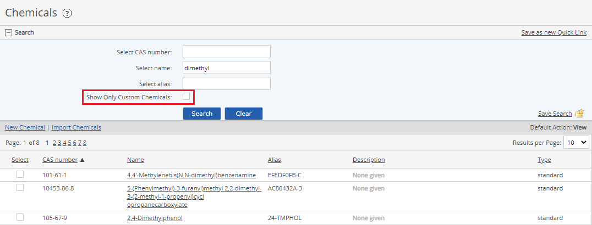

Custom chemicals may be created and edited as needed for system. You can create a custom chemical (which cannot be edited) by copying a standard chemical. The custom chemical can then be edited. Custom chemicals can be created directly in the system or imported from an Excel template.
It is best practice to use custom chemicals for implementation, and use the standard chemicals for reference only, since the standard chemicals cannot be edited. You may need slightly different numeric values or greater precision than provided on the standard chemicals. You can also use the Boolean values to tag chemicals for various chemical lists not defined in the standard chemicals.
To view chemicals in the system:
